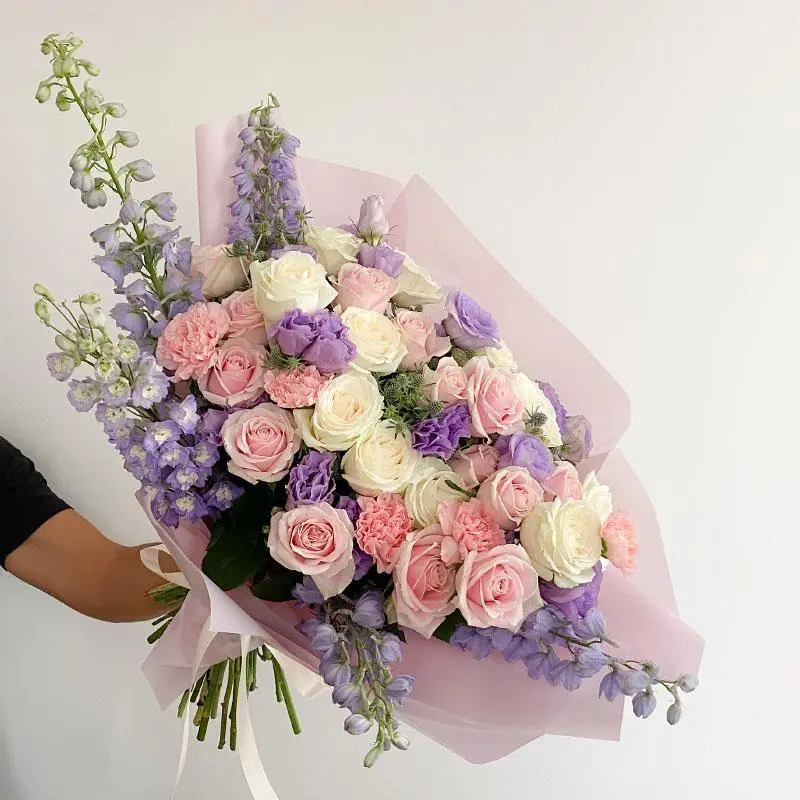

14 DE FEBRERO
Día del Amor y la Amistad
Es una fecha popular para expresar cariño a la pareja, amistades y personas importantes. No todos los regalos tienen que ser románticos: también puedes preparar un ramo para una amistad.
RAMO RESUELTO
Una celebración se recuerda más cuando tiene un detalle especial.

UN DETALLE PARA CADA OCASIÓN
A lo largo del año existen celebraciones que nos permiten demostrar cariño, reconocer a otras personas y recordar momentos importantes. Elegir flores para estas ocasiones es una manera de acompañar la celebración con un detalle personal.
14 DE FEBRERO
Es una fecha popular para expresar cariño a la pareja, amistades y personas importantes. No todos los regalos tienen que ser románticos: también puedes preparar un ramo para una amistad.
8 DE MARZO
Esta fecha invita a reconocer los derechos, la historia y los logros de las mujeres. Si decides regalar flores, puedes acompañarlas con un mensaje de reconocimiento y respeto.
10 DE MAYO · MÉXICO
Muchas familias aprovechan esta fecha para agradecer el cariño, el acompañamiento y el apoyo de sus mamás. Un ramo puede acompañarse con una carta o una nota personal.
FECHA PERSONAL
Los cumpleaños son una oportunidad para celebrar a alguien y demostrar que recordamos su día. Puedes elegir flores de sus colores favoritos o un arreglo alegre y variado.
FECHA PERSONAL
Un aniversario permite recordar una relación, una amistad o una meta compartida. Elegir una flor que tenga un significado para ambas personas puede hacer que el detalle sea más personal.
FIN DE CICLO ESCOLAR
Terminar una etapa representa esfuerzo y dedicación. Las flores pueden servir para felicitar a alguien por una graduación, un reconocimiento o una meta que le haya costado alcanzar.
1 Y 2 DE NOVIEMBRE · MÉXICO
En muchas comunidades mexicanas, las flores forman parte de las ofrendas y de los espacios dedicados a recordar a los seres queridos. El cempasúchil destaca por su color y su presencia en esta tradición.
DICIEMBRE
Son momentos en los que muchas personas se reúnen para compartir buenos deseos. Un arreglo puede decorar la casa o convertirse en un regalo para familiares y amistades.
También puedes regalar flores para agradecer, animar a alguien, pedir disculpas o simplemente demostrar que te acordaste de esa persona. Los detalles inesperados pueden tener un significado especial.
Consultar un arreglo